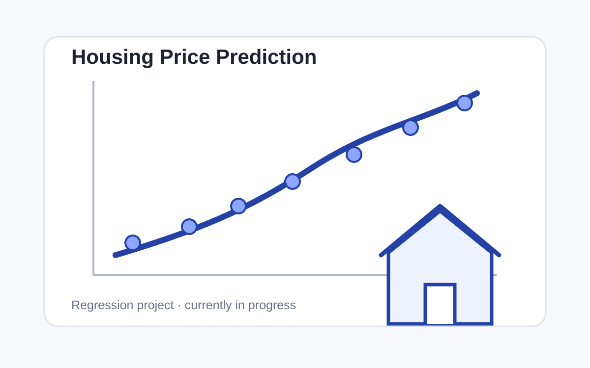

Machine Learning · Regression · In Progress
Housing Price Prediction
A regression project using property characteristics to predict residential sale prices.

Problem
Investigate which property characteristics are most useful for predicting residential sale price.
Current progress
The dataset has been loaded and inspected with descriptive summaries, sample rows, and data-type information. The training data contains 1,460 rows and 81 columns before cleaning.
Planned workflow
The next stages are missing-value analysis, exploratory visualization, feature preparation, train/test splitting, baseline regression, model comparison, and evaluation with regression metrics.
Results
This project is still in progress. Model results, evaluation metrics, and final visualizations will be added after the analysis is completed.